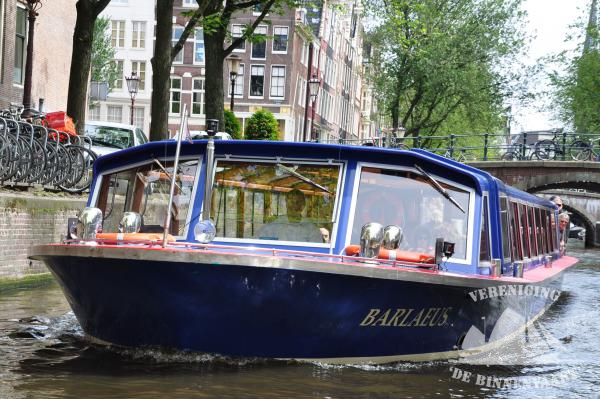
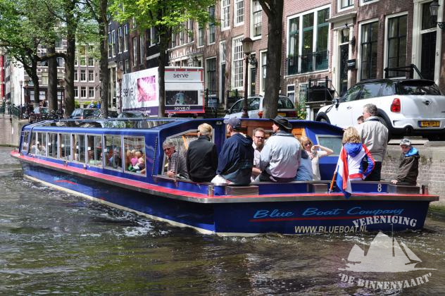
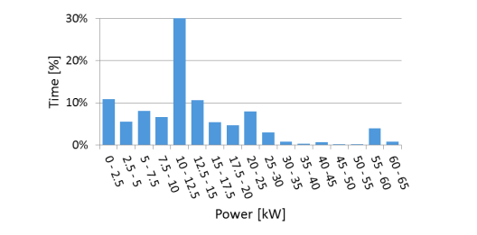
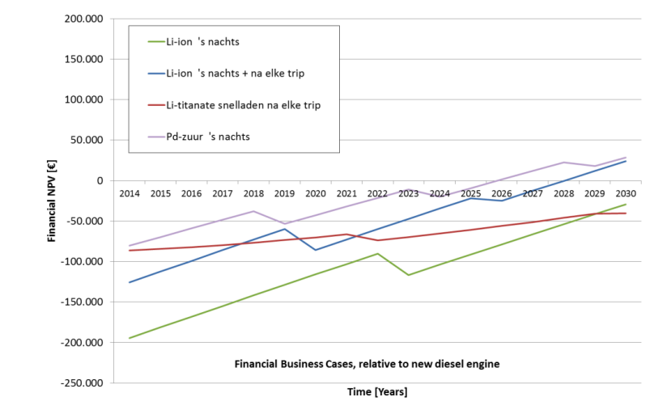

Energy
The Municipality is worried that the canal- and support boats might pollute the air with their diesel engines. Since the Municipality wants to create ideal conditions for the swimmers so they can set records (always nice for PR), it is your task to figure out if their concern is warranted and what should or could be done to improve conditions. Next to that, Amsterdam wants to advertise this event as a Neutral Energy Event©™® (NEE).
How many of the canal boats currently in use are diesel/ fossil fuel driven and how many boats are electrical driven?
To support the transition to emission-free transport in 2025, all emission-free boats in Amsterdam, such as electric boats, get a discount on inland port dues (Municipality of Amsterdam, B. 2023).
As monitored by the municipality of Amsterdam, in 2022 7350 vignettes have been provided for recreational moorings in Amsterdam. Roughly 34 percent (2496 vignettes) of these vignettes were for boats with an electrical motor, or hybrid boats, which were only allowed to use their electrical motor in Amsterdam (Municipality of Amsterdam, 2022). Therefore, more than half of the vignettes were used for boats with fuel engines.
In the commercial sector, many canal boat companies have started converting their boats to electrical driven boats. In 2020, already 75 percent of the 550 commercial vessels (so roughly 413 canal boats) became electrical driven (Jonkers, 2020). As buying a new electric canal boat is more expensive than transforming a fuel driven boat to an electric one, many canal boat companies chose for the second option (Sterling, 2020).
registered_sustainable = 2496
total_registered = 7350
results = (registered_sustainable / total_registered) * 100
print (results)
33.95918367346939
Commercial = 550
Electric_commercial = 0.75 * New
print (Electric_commercial)
412.5
Are there peak times for the canal boats?
As there is no data available of the peak times for the canal boats, we talked to three employees of the bigger shipping companies of Amsterdam, the Blue Boat Company, Lovers B.V. and shipping company Plas.
When talking to an employee of the Blue Boat Company, she explained how it differs per boarding location how busy it is during the day. As the location close to the Hard Rock Cafe close to the Leidseplein is oftentimes fully reserved almost the whole day (from 10:00 – 18:00 and from 18:30 – 23:30). While the location close to the Heinekenexperience, is less busy, due to less tourists walking by (Employee A., personal communication, October 13, 2023). Shipping company Lovers B.V. explained how they noticed how the evening cruises were busier than during the day, since tourists like to see the lights of Amsterdam during the cruise (Employee B., personal communication, October 13, 2023). Shipping Company Plas usually experienced two waves: during the daytime from 12:00 to 16:00 and from 19:00-21:00, so around lunch- and dinnertime (Employee C., personal communication, October 13, 2023).
Furthermore, the prices of the cruises in the evening are usually more expensive than the cruises during the day (BlueBoatCompany, 2023; Rederij Plas, 2023). This could also be an indication for the popularity of the evening cruises, and thus the peak times of the canal boats.
Compare the energy use of the canal boats to some other activities in the city.
Use canal boats more or less energy in relation to their carbon footprint compared to these other activities?
The electrical canalboat the Barlaeus of the Blue Boat Company of Amsterdam


Source: Schuitemaker (2008) De Binnenvaart
As TNO described in their report in 2016 about Electrical cruises in Amsterdam, an electrical boat uses roughly 17kWh to sail and for auxiliary systems. In colder weather, the boat also uses 15kW for heating, but this can be decreased to 5 kW, using a heat pump (Van Mensch et al., 2016).
In practice, a typical big canal boat, such as the Barleaus of the Blue Boat Company uses roughly 15,5 kWh and due to loss of return, ends up being 19,4 kWh. At the same time, the canal boat has other energy needs, besides driving force, such as lightning and toilet facilities, which needs an extra 2 kWh. Therefore, in winter times, a canal boat uses approximately 21,4 to 22 kWh to sail for an hour. As can be seen by the graph below, the energy usage sometimes peaks, when making sharp turns and with maneuvering though the canals.
Therefore, the energy usage is dependent on the route, since the speed and actions, such as braking can increase the amount of kW is needed (Van Mensch et al., 2016).
Time distribution per power class of the Barlaeus of the Blue Boat Company of Amsterdam

Source: Van Mensch et al. (2016)
According to Van Mensch et al. (2016), the Li-ion-batteries and lead-acid batteries are the most suitable for canal boats. At the same time, the lithium, which is needed for the Li-ion-batteries, is available from multiple countries. Nonetheless, these batteries cannot be fully recycled, while this is possible with the lead-acid batteries.
If the electrical canal boat would use grey electricity, or electricity generated in polluting coal, gas or nuclear power stations, it would emit 13,89 kilos of CO2 per hour during winter (Wisenederland, 2023). Thus, when the Barlaeus sails for an hour during winter, it uses approximately 0,27 kWh per person (assuming that there are 80 persons in the boat) (Van Mensch et al., 2016) and 0,17 kilos of CO2 (Wisenederland, 2023).
When comparing this to the energy usage of an electrical scooter, it becomes clear how the canal boat uses less energy per person. As an electrical scooter uses 2 kWh per 100 kilometers and can drive up to 45 kilometers per hour (Milieucentraal, 2023). Therefore, it uses 0,9 kWh and 0,58 kilos of CO2 per hour per person (assuming there is only one person using the scooter).
Energy = 19.4 + 2
print (Energy)
21.4
KWHPP = 21.4 / 80
print (KWHPP)
kilo = KWHPP * 0.649
print (kilo)
0.26749999999999996
0.17360749999999997
emissionboat = 21.4 * 0.649
print (emissionboat)
13.8886
scooter = 2 / 100
print (scooter)
scooterkwh = scooter * 45
print (scooterkwh)
scooterco = scooterkwh * 0.649
print (scooterco)
0.02
0.9
0.5841000000000001
Would you consider it economically feasible?
As Mensch et al. (2016) explain, the electrical boats itself are quite a big investment, in comparison to the regular boats. Therefore, it will take some time before the investment will be worth it. As can be seen by the graph below, as the lead-acid batteries are less expensive than the Li-ion-batteries, the lead-acid batteries have a shorter break-even period of twelve years. Nonetheless, these types of batteries were already expensive and the prices of them have increased even more, due to their ability to store energy, which is necessary for many electric transport modes (Koenis, 2023; Van Zon, 2023). Therefore, even though electricity is cheaper than fuel, the electric canal boats will stay a large investment.
As all transport must be emission-free in the city center in 2025 (Municipality of Amsterdam, B. 2023), canal boat companies will not be able to use fuel engine boats anymore. Therefore, canal boat companies should start electrifying soon if they do not want to close their business.
Business case with investment year 2014, relative to new diesel engine
Source: Van Mensch et al. (2016)
How many support boats and vehicles are needed for the Paralympics event only?
As it is still unclear how many participants will join the Paralympics event in the canals of Amsterdam, the number of participants for the Amsterdam City Swim in 2023 will be used.
When looking at the number of participants for the two kilometers Amsterdam City Swim in 2023, it becomes clear how the relatively narrow canals of Amsterdam make it difficult for all the participants to swim at the same time. Therefore, the program of the Amsterdam City Swim is divided in about twenty waves, or timeslots. Hence, as 3000 participants have registered, during each wave there will be around 150 competitors swimming (Amsterdam City Swim, 2023).
In another open water swimming contest in the Netherlands in 2023, the Lektocht, there were around 400 swimmers and 24 lifeboats. The distance of the Lektocht was six kilometers (Culemborgse courant, 2023). Thus, about nine lifeboats should be enough for the five kilometers Paralympics event.
However, apart from vehicles such as lifeboats, the municipality of Amsterdam should also consider the extra traffic flows from the Paralympics event. Since, for instance camera crews, staff members, medical care et cetera, also must be able to reach the event and the participants.
swimmers = 3000 / 20
print (swimmers)
150.0
Boats = 400 / 150
print (Boats)
Boats_Para = 24 / (Boats)
print (Boats_Para)
2.6666666666666665
9.0
If only clean energy can be used, how many solar panels or wind turbines are needed?
As Van Mensch et al. (2016) described, if all canal tours and passenger transport over water, would be electrified, the energy need would be roughly 9105 MWh (9105000 KWh) per year, which is the same amount as 2600 households (Van Mensch er al., 2016).
One windmill with a power of 3 MW can produce 6,5 milion KWh per year, which is enough for 2100 households for one year (Gaslicht, 2023). Therefore, if the canal boats would need the same amount of energy of roughly 2600 households, two windmills should be more than enough (Gaslicht, 2023).
When calculating how many solar panels would be needed, it becomes clear how there is way more space needed for solar panels than for windmills. As one solar panel provides 300 KWh electricity per year (Consumentenbond, 2022) and requires a surface of 1,5 square meters (Solvari, 2023). Therefore, for all electrified canal tours and passenger transport over water, 30350 solar panels would be needed and 45525 square meters, which is about the same as seven soccer fields (Schwartz, 2020).
Panels = 9105000 / 300
print (Panels)
Squarem = (Panels * 1.5)
print (Squarem)
30350.0
45525.0
Is it possible to accommodate these facilities within the city?
The municipality of Amsterdam is already searching for locations around Amsterdam to place 17 new windmills before 2030 (Municipality of Amsterdam, D. 2023). However, when looking at their preferred locations, they are all placed on the outskirts of Amsterdam, such as the harbor (Municipality of Amsterdam, C. 2023). Therefore, if they would have to place 19 windmills, instead of 17, the municipality would probably not prefer them within the city center.
At the moment, there are one million solar panels in Amsterdam (Municipality of Amsterdam, A. 2023). Therefore, for all electrified canal tours and passenger transport over water, the number of solar panels should increase with around a third of the existing amount. As the electrification of all canal tours and passenger transport over water would require seven soccer fields of solar panels, this could be possible in Amsterdam, since for instance the Port of Amsterdam has already reached its goal of placing 250.000 square meters of solar panels in the port area in 2024 (Port of Amsterdam, 2023). They are now striving for 350.000 square meters in 2024. Therefore, it could be assumed that it is possible to place the needed solar panels in for instance, the port area of Amsterdam.
Would there be any effect on the water quality if there are less/ no canal boats using fossil fuels?
Water quality can be affected by many different aspects. As the Water Authority Amstel, Gooi and Vecht (2023) explains, for example, how the ecological water quality is influenced by boat traffic. Due to the engines of the boats, the bottom of the water comes up, resulting in more mud and less light in the water. The decrease in light influences biodiversity since plants and animals need light to grow.
Nonetheless, due to the connections to the sewer systems, the sewage water from the houseboats is not released in the canals anymore, which benefitted the water quality. Now the quality of the water in Amsterdam usually decreases only on the days were there is a lot of rain (Waterschap Amstel, Gooi & Vecht, 2023).
Thus, the water quality will still be influenced by electric boats, since their engines decrease the amount of light in the water and thus biodiversity.
References
Amsterdam City Swim (2023) Programme https://www.amsterdamcityswim.nl/programma (consulted 13 October 2023).
BlueBoatCompany (2023) Rondvaarten https://www.blueboat.nl/rondvaart-amsterdam/ (consulted 13 October 2023).
Culemborgse courant (2023) 25e editie van de Lektocht: zwemmen van Beusichem naar Culemborg https://www.culemborgsecourant.nl/sport/sport/352723/25e-editie-van-de-lektocht-zwemmen-van-beusichem-naar-culemborg (consulted 13 October 2023).
Gaslicht (2023) De opbrengst van windmolens: hoeveel megawatt levert een windmolen? https://www.gaslicht.com/energie-informatie/windmolen#:~:text=Vermogen%20van%20een%20windmolen,-Hoe%20zit%20dat&text=Nieuwe%20windmolens%20hebben%20een%20vermogen,n%203000%20kWh%20per%20jaar (consulted 17 October 2023).
Jonkers, J. (2020) 75% van toeristische boten in Amsterdam is elektrisch https://techpulse.be/nieuws/274108/75-van-toeristische-boten-in-amsterdam-is-elektrisch/ (consulted 10 October 2023).
Koenis, C. (2023) Het 'witte goud': waarom de hele wereld op jacht is naar lithium https://www.rtlnieuws.nl/economie/artikel/5357651/lithium-batterij-accu-elektrische-auto-handel-grondstoffen (consulted 17 October 2023).
Milieucentraal (2023) Elektrische scooter https://www.milieucentraal.nl/duurzaam-vervoer/elektrische-scooter/ (consulted 10 October 2023).
Municipality of Amsterdam (2023) A. Een stralende mijlpaal: 1 miljoen zonnepanelen in Amsterdam https://www.amsterdam.nl/nieuws/nieuwsoverzicht/1-miljoen-zonnepanelen/ (consulted 16 October 2023).
Municipality of Amsterdam (2023) B. Elektrisch varen https://www.amsterdam.nl/verkeer-vervoer/varen-amsterdam/elektrisch-varen/ (consulted 10 October 2023).
Municipality of Amsterdam (2022) Grachtenmonitor 2022 https://openresearch.amsterdam/nl/page/92981/grachtenmonitor-2022 (consulted 10 October 2023).
Municipality of Amsterdam (2023) C. Kaart windzoekgebieden https://www.amsterdam.nl/wonen-leefomgeving/duurzaam-amsterdam/windmolens-amsterdam/kaart-zoekgebieden/ (consulted 16 October 2023).
Municipality of Amsterdam (2023) D. Windmolens in Amsterdam https://www.amsterdam.nl/wonen-leefomgeving/duurzaam-amsterdam/windmolens-amsterdam/ (consulted 16 October 2023).
Port of Amsterdam (2023) Ruim 260.000 m2 zonnepanelen in de Amsterdamse haven https://www.portofamsterdam.com/nl/nieuws/ruim-260000-m2-zonnepanelen-de-amsterdamse-haven (consulted 16 October 2023).
Rederij Plas (2023) Boottochten in Amsterdam https://www.rederijplas.nl/nl (consulted 13 October 2023).
Schwartz, K. (2020) Nog niet eerder openden er zoveel grote distributiecentra in ons land https://www.trouw.nl/economie/nog-niet-eerder-openden-er-zoveel-grote-distributiecentra-in-ons-land~bb609db6/#:~:text=Grote%20distributiecentra%3F,dertig%20in%20aanbouw%20of%20aangekondigd (consulted 17 October 2023).
Sterling, T. (2020) Amsterdam's boats go electric ahead of 2025 diesel ban https://www.reuters.com/article/us-climate-change-netherlands/amsterdams-boats-go-electric-ahead-of-2025-diesel-ban-idUSKBN20Q1W7 (consulted 10 October 2023).
Solvari (2023) Zonnepanelen berekenen https://www.zonne-paneel.net/zonnepanelen-berekenen/#:~:text=Je%20berekent%20het%20aantal%20zonnepanelen,16%20x%20260%20%3D%204117) (consulted 17 October 2023).
Van Mensch, P., Verbeek, R., Bolech, M. (2016) Elektrische rondvaart in Amsterdam: TNO-rapport 2016 (Report. No. R10481). TNO .
Verschoor (2022) Hoeveel zonnepanelen heb ik nodig? https://www.consumentenbond.nl/zonnepanelen/hoeveel-zonnepanelen#:~:text=Zoals%20we%20hierboven%20beschrijven%2C%20leveren,je%2010%20gemiddelde%20zonnepanelen%20nodig (consulted 17 October 2023).
Van Zon (2023) Op zoek naar de batterij van de toekomst: ‘Ben ervan overtuigd dat het gaat lukken’ https://www.parool.nl/nederland/op-zoek-naar-de-batterij-van-de-toekomst-ben-ervan-overtuigd-dat-het-gaat-lukken~b905e831/ (consulted 17 October 2023).
Waterschap Amstel Gooi & Vecht (2023) Werken aan schoon water https://www.agv.nl/specials/waterkwaliteit/ (consulted 16 October 2023).
Wisenederland (2023) Hoeveel CO2-uitstoot bespaar je als je overstapt op groene energie? https://wisenederland.nl/artikel/hoeveel-co2-uitstoot-bespaar-je-als-je-overstapt-op-groene-energie/ (consulted 16 October 2023).